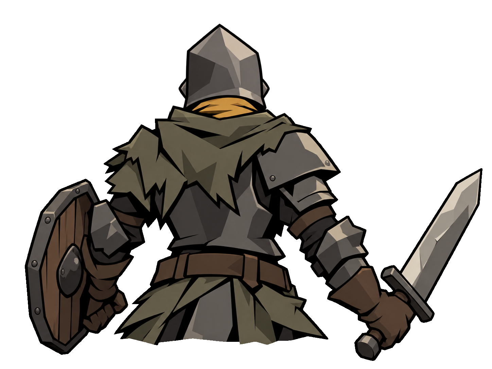
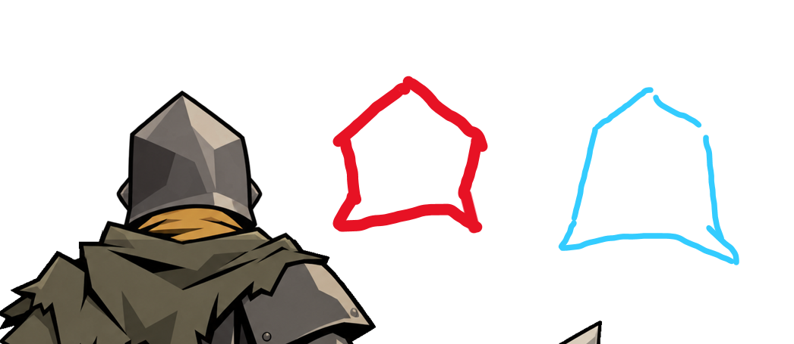
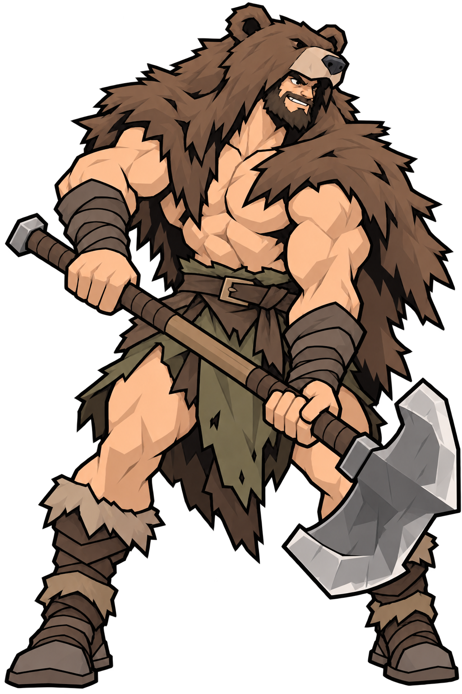
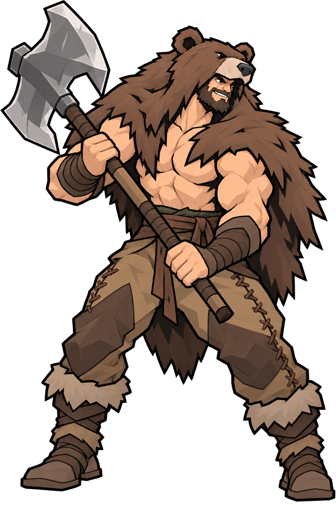
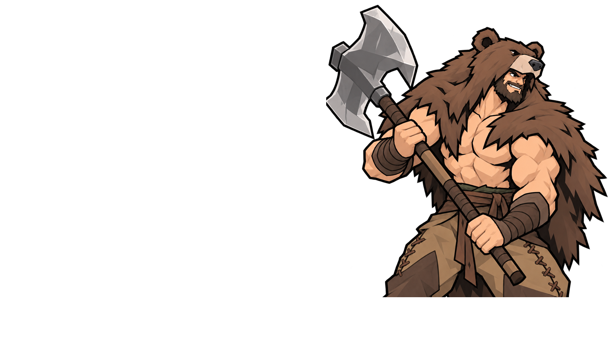
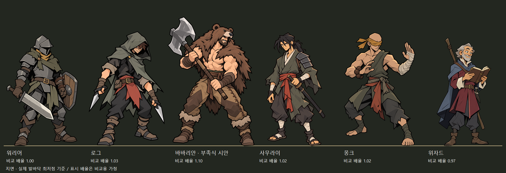
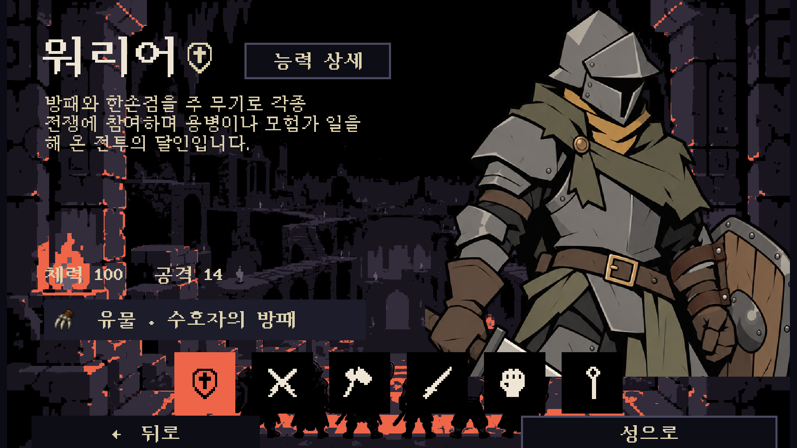

최신 수정: 원본 팔 고정 방패 · 바바리안 상체 뒷모습 · 로그 단검 · 위자드 파트너 →
투구·팔 고정 방패와 부족식 바바리안
워리어는 빨간 윤곽의 안쪽 꺾임과 짧게 벌어지는 목 테두리로 수정했습니다. 방패와 팔은 원래 자세로 복원하고 팔뚝을 감싸는 가죽 띠로 고정했습니다.
워리어 · 투구와 방패 뒷면

이전 · 곧게 내려오는 투구, 손잡이가 불분명한 방패 수정 · 아래쪽이 안으로 들어간 투구 / 원래 팔과 방패 자세에 팔뚝을 감싸는 고정 띠
수정 · 아래쪽이 안으로 들어간 투구 / 원래 팔과 방패 자세에 팔뚝을 감싸는 고정 띠사용자 윤곽 기준

워리어 · 앞모습의 방패 고정 띠
 이전 · 방패 옆에서 연결이 불분명한 주먹
이전 · 방패 옆에서 연결이 불분명한 주먹 수정 · 손과 팔의 원래 각도를 유지하고 방패 안쪽에서 팔뚝으로 가죽 띠가 이어집니다.
수정 · 손과 팔의 원래 각도를 유지하고 방패 안쪽에서 팔뚝으로 가죽 띠가 이어집니다.곰가죽 바바리안 · 부족식 가죽 바지와 위로 세운 도끼

이전 · 찢어진 허리천과 아래로 향한 도끼
수정 · 두 다리를 덮는 가죽 바지와 옆선 끈 마감, 털 부츠. 도끼날을 어깨 위로 올려 상반신에서도 보이도록 했습니다.바바리안 · 선택창 상반신 구도 확인

전신에서 동일한 비율로 자른 선택창용 구도 미리보기현재 캐릭터들과 비교 · 지면 기준
원본 크기
각 이미지의 실제 발바닥 최저점을 같은 선에 맞췄습니다. 종횡비를 유지하고 바바리안을 조금 크게 배치했습니다. 표시 배율은 확정 신장 설정이 없는 상태의 비교용 가정이며, 자세·투구·곰가죽을 포함한 몸 높이 기준이며, 바바리안이 위로 든 도끼 높이는 제외했습니다. 비교 배율 기록
곰가죽 바바리안은 별도 시안입니다. 기존 게임의 리자드 바바리안은 유지됩니다.
Unity 실제 적용
 게임 · 수정된 투구와 방패, 기존 구도
게임 · 수정된 투구와 방패, 기존 구도
선택창 · 기존 UX와 상반신 구도, 방패 연결 수정 반영수정 및 검증 기록 · 내장 image_gen 편집 프롬프트 · 이전 비교